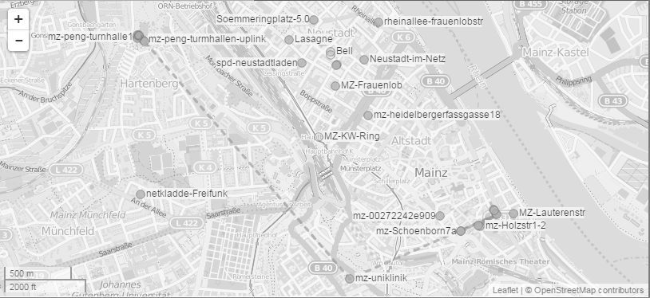

(Informationen)
Was ist Freifunk?
Freifunknetze sind freie, WLAN-basierte Funknetze, die nicht von kommerziellen Anbietern, sondern von Privatpersonen, Vereinen oder ähnlichen Organisationen angeboten werden. Dabei sind die Benutzer auch gleichzeitig die Betreiber der Computernetzwerke, die von einfachen Heimnetzwerken ausgehend, Häuser, Stadtteile, Dörfer oder ganze Städte vernetzen können.
Jeder Nutzer im Freifunk-Netz stellt seinen WLAN-Router für den Datentransfer der anderen Teilnehmer zur Verfügung. Im Gegenzug kann er oder sie ebenfalls Daten, wie zum Beispiel Text, Musik und Filme über das interne Freifunk-Netz übertragen oder über von Teilnehmern eingerichtete Dienste im Netz Chatten, Telefonieren und gemeinsam Onlinegames spielen. Viele Teilnehmer stellen zudem ihren Internetzugang zur Verfügung und ermöglichen anderen den Zugang zum weltweiten Netz - gerade auch den sozial schwachen Gruppen, die sich keinen eigenen Anschluss leisten können.
»Das ist ein wenig so, wie wenndu dein eigenes Gemüse anbaust, es schmeckt einfach besser«
Aaron Kaplan, Funkfeuer Wien
Freifunk-Netze sind Selbstmach-Netze: Für den Aufbau nutzen Teilnehmer auf ihren WLAN-Routern spezielle Linuxdistributionen, z. B. die Freifunk-Firmware. Lokale Gruppen stellen die auf eigene Bedürfnisse angepasste Software dann auf ihren Websites zur Verfügung. In vielen Dörfern und Städten gibt es mittlerweile Freifunk-Gruppen und Zusammenkünfte, wo sich Interessierte treffen.
Fig.1 — Nodes vermeshen sich und erweitern das Netz
(Community)
Participate
Es gibt viele Möglichkeiten wie du dich in das Projekt einbringen kannst. Um alle wichtigen Nachrichten zu erhalten und mitreden zu können, abonniere unsere Mailingsliste.
Tools zur Organisiation und Kommunikation:↪ Wiki
↪ Mailingliste
↪ Etherpad
Im Wiki findet du Dokumentationen und HowTos z.B. zur Konfiguration einer Node.
(Termine)
Nächstes Treffen
Wir treffen uns in regelmäßigen Abständen meistens im Holzturm in Mainz.Genauere Informationen dazu werden in unserem Blog oder unserem Kalender angekündigt.
Interessierte sind herzlich eingeladen. Wir freuen uns auf euer Kommen!
(Stadtkarte)
Aktive Hotspots in Mainz
Wie du deinen eigenen Freifunk-Knoten betrieben kannst, erfährst du in unserem Wiki unter HowTo: Gluon flashen.
(Spenden)
Am Liebsten sind uns Spenden über das Spendenortal Betterplace.org. Dort wird das Ausstellen der Spendenbescheinigung für uns übernommen.
Aber natürlich freuen wir uns auch sehr über eure ganz traditionelle Spende direkt auf unser Konto.
Bankverbindung
| Empfänger | Freifunk Mainz e.V. |
| Kontonummer | 872 804 018 |
| Bankleitzahl | 551 900 00 |
| Institut | Mainzer Volksbank |
| IBAN | DE57 5519 0000 0872 8040 18 |
| BIC | MVBM DE 55 |
Bitcoin
19BfEM9m3E3xAffymJJrUz68ejkpHL49RP
(FAQ)
Häufig gestellte Fragen
Was ist ein Node?
Ein Node ist ein modifizierter WLAN-Router der sich intelligent durch Meshing mit anderen Routern verbinden und die Reichweite vergrößern kann.Weitere Fragen sind in unserem Wiki beantwortet
(Router Konfig)
Wie präpariere ich einen neuen Router
Du möchtest dir einen Router anschaffen und ihn für Freifunk vorbereiten?
Klick dich weiter durch zur Anleitung
(Impressum)
Verantwortlich
Freifunk Mainz e.V.Florian Altherr (1. Vorsitzender)
Willi-Wolf-Straße 12
55128 Mainz
Gestaltung & Konzept
Daniel Weberruß (Bachelor-Thesis,Fachhochschule Mainz, SS 2013),
Betreut von Prof. Dr. Isabel Naegele
Programmierung
Daniel Weberruß (Mit Unterstützungvon Paul Schneider)
Schrift
Liberation Sans & Liberation Mono,Asscender Corporation,
Steve Matteson, SIL Open Font License.
Titelbild
Marconi Room, A. H. Poole Studio,The National Library of Ireland, P_WP_2539
Veröffentlicht in Flickr Commons unter Public Domain.